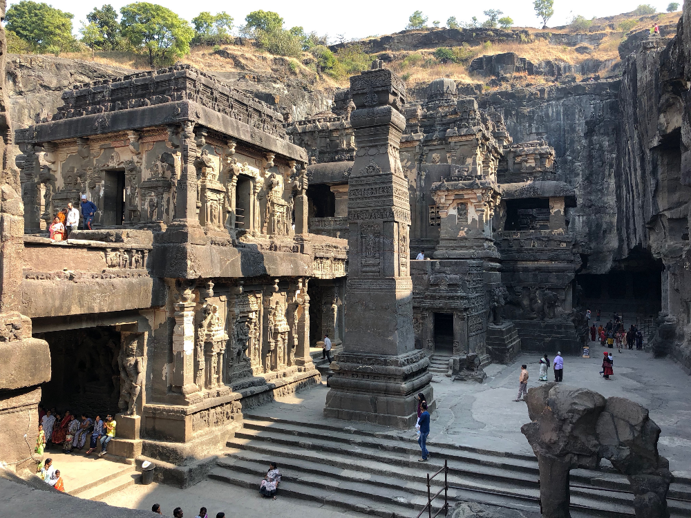
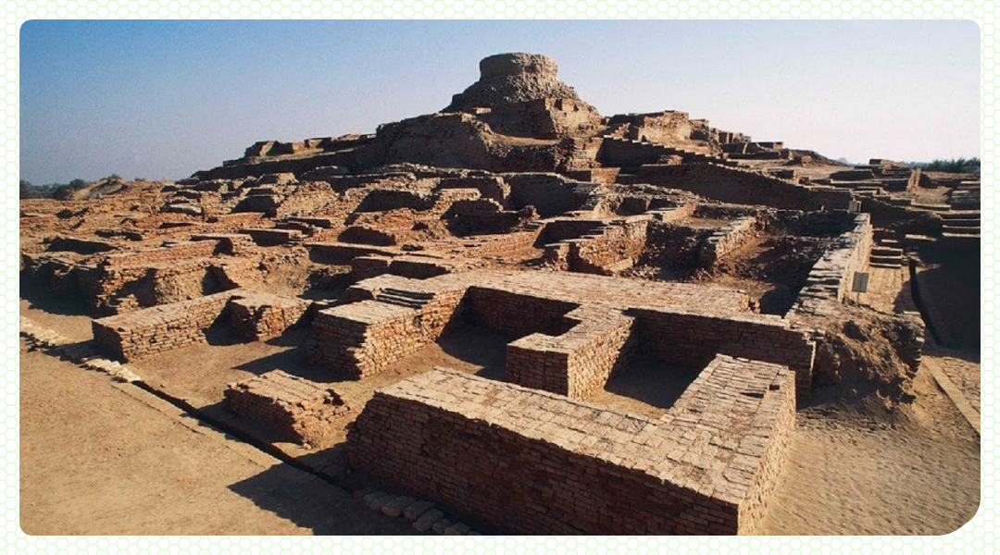
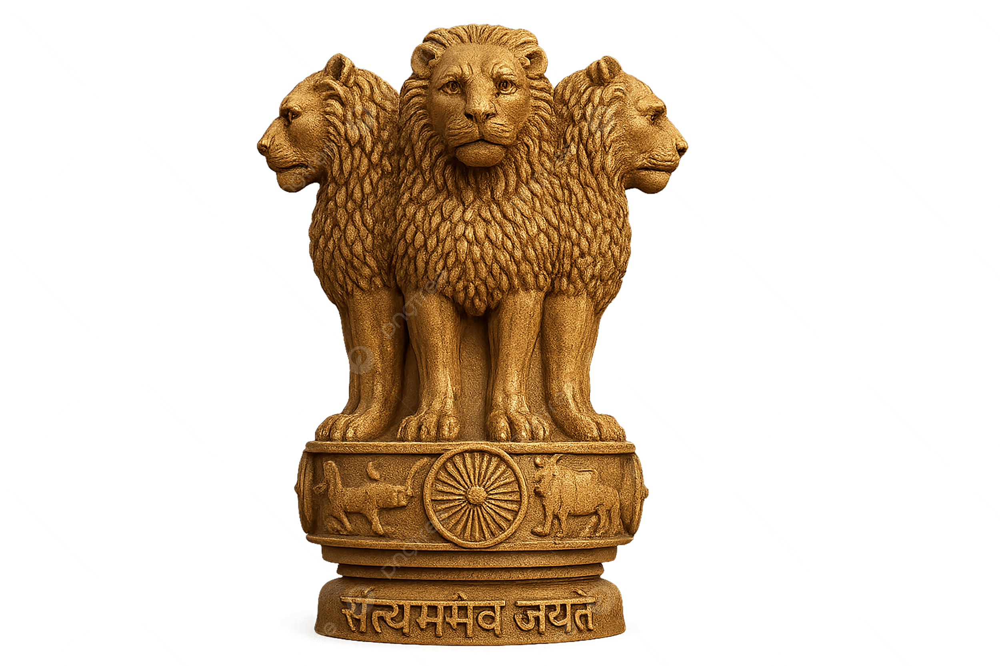
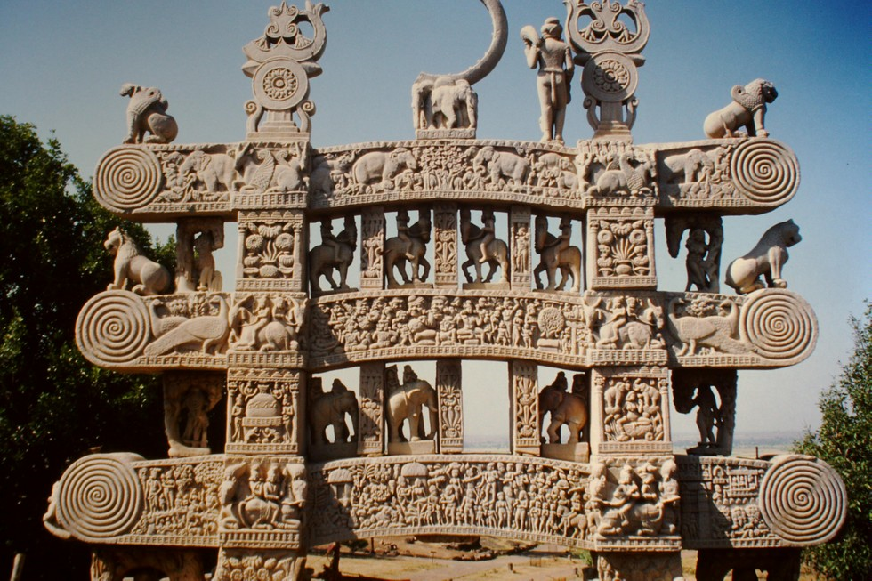
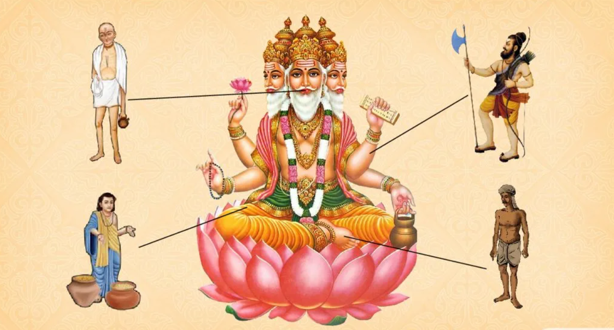

1. Природные условия
Индия располагается на полуострове Индостан в южной части Азии. Гималайские горы защищают страну от северных ветров, с юга её омывают тёплые воды Индийского океана.
Климат Индии жаркий и влажный. Во время сезона дождей реки выходят из берегов. Долины самых больших рек, Инда и Ганга, плодородны. Земледельцы обосновались здесь в глубокой древности. Они упорно отвоёвывали участки земли под посевы, поскольку бóльшую часть Индии в древности покрывали болота и джунгли.

2. Хараппская цивилизация
В долине реки Инд в середине 3-го тысячелетия до н. э. жили земледельцы, создавшие самобытную культуру. Они знали многие ремёсла, имели письменность, умели плавить медь и строить города. Самый известный из построенных ими городов располагался в месте, называемом сейчас Хараппа, поэтому после произведённых там раскопок вся цивилизация получила название хараппская, или индская.
Жители древнеиндийских городов занимались земледелием и скотоводством. Разводили овец, коз, буйволов, даже слонов. Существование торговых связей с другими государствами подтверждают находки предметов с берегов Инда в городах юга Месопотамии. Название страны древнеиндийской цивилизации дошло только в месопотамских текстах как «далёкая страна» — Мелухха.
После раскопок древнеиндейского города Мохенджо-Даро (это название современное) археологи смогли восстановить образ жизни его обитателей. В центре города на холме возвышалась крепость, где находились дворец и огромный амбар для зерна. Вдоль прямых и широких улиц стояли двух- и трёхэтажные дома из красного обожжённого кирпича. На перекрёстках улиц углы зданий закруглялись, чтобы не мешать проезду повозок. Дома имели плоские крыши, душными летними ночами на них спали. Почти в каждом доме были колодец и комната для омовений. Грязная вода стекала в общегородской канал, выводивший её далеко за город. В Мохенджо-Даро найдены остатки плавательного бассейна с помещениями для отдыха. Среди находок было много орудий труда и украшений.
К середине 2-го тысячелетия до н. э. по неизвестной пока причине жители внезапно покинули древнеиндийские города. Древнейшая цивилизация Индии безвозвратно исчезла, оставив после себя величественные руины.

Приведите примеры, подтверждающие, что хараппская цивилизация отличалась высоким уровнем развития.
3. Империя Маурьев
В середине 2-го тысячелетия до н. э. с северо-запада на территорию Индостана вторглись племена ариев. От местных жителей они отличались культурой, языком и занятиями. Пришельцы говорили на другом языке — санскрите, занимались в основном скотоводством. Арии, расселяясь по территории Индии, переходили к оседлому образу жизни и земледелию. Со временем они смешались с населением Северной Индии. В начале 1-го тысячелетия до н. э. их потомки-индийцы научились добывать и обрабатывать железо.
Во главе арийских племён стояли вожди — раджи, которые превратились в царей. В 1-м тысячелетии до н. э. на территории Индии существовало множество царств, враждовавших между собой.
В конце IV (4) века до н. э. после долгих и кровопролитных войн северную часть Индии подчинил царь Чандрагупта из рода Маурья, основатель империи Маурьев. Власть его потомка, царя Ашоки, правившего в середине III (3) века до н. э., распространилась почти на всю Индию.

Но его государство просуществовало недолго и распалось вскоре после смерти Ашоки.
Спустя несколько веков в Северной Индии возвысилась династия Гуптов. Один из её представителей, Самудрагупта (335—380 годы), включил в состав своей империи ряд княжеств. Вся Северная Индия была вновь объединена под одной властью. Сын Самудрагупты, Чандрагупта II (380—415 годы), расширил пределы своего государства, упрочил его внутреннее положение, способствовал развитию науки и искусства. Время царствования Чандрагупты II (2) в исторической литературе называют «золотым веком» Гуптов.
Однако стремительные кочевники, пришедшие в V—VI (5—6) веках с северо-востока и запада, уничтожили эту державу.

4. Структура индийского общества
Всё население Индии делилось на четыре группы людей со строго определёнными занятиями, правами и обязанностями — варны жрецов, воинов, земледельцев, ремесленников и купцов, а также слуг. Слово «варна» на санскрите, в частности, значит «сорт», «категория».
По легенде, варны создал главный индийский бог Брахма. Из своих уст он сделал жрецов — брахманов, поэтому только они могли беседовать с богами. Из могучих рук его вышли воины — кшатрии. Из своих бёдер бог создал обычных общинников, земледельцев и ремесленников — вайшьев, из ног, запачканных в грязи, шудр — слуг.
Брахманы
Жрецы.
Созданы из уст бога.
Кшатрии
Воины.
Созданы из могучих рук бога.
Вайшьи
Земледельцы и ремесленники.
Созданы из бёдер бога.
Шудры
Слуги.
Созданы из ног, запачканных в грязи.
Каждый индиец должен был оставаться в той же варне, что и его отец. Сын жреца становился жрецом, сын воина — воином. По закону никто не мог перейти из одной варны в другую. Люди разных варн различались не только родом занятий, но и своими домами, покроем одежды и даже её цветом.

Представители каких варн изображены на рисунке?
📝 Подведём итоги
Хараппская цивилизация появилась в долине реки Инд в 3-м тысячелетии до н. э. В середине 2-го тысячелетия на территорию Индостана вторгаются племена ариев. Индийское общество было разделено на группы — варны.